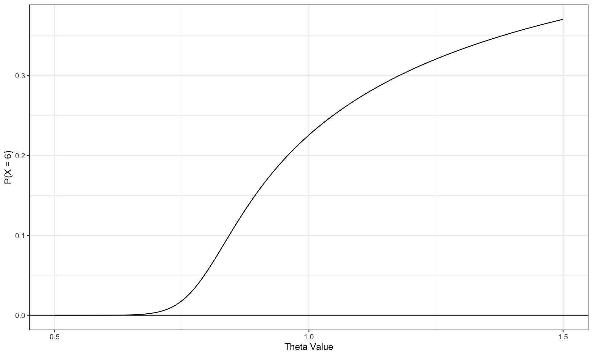
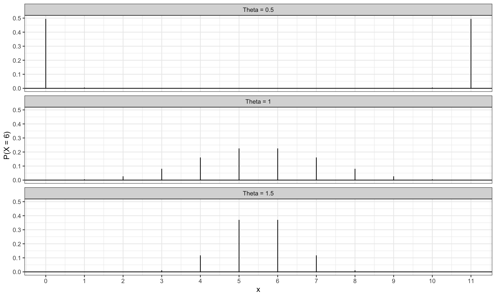
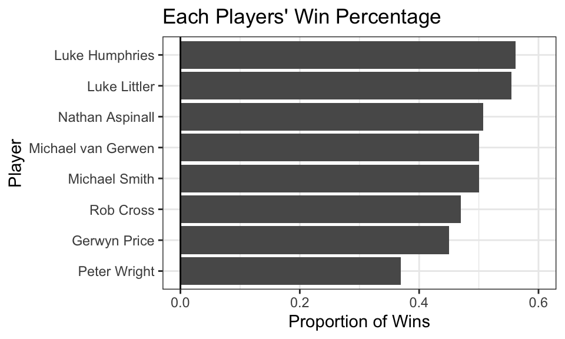

Complete the tasks below. Make sure to start your solutions in on a new line that starts with “Solution:”.
Make sure to use the Quarto Cheatsheet. This will make completing and writing up the lab much easier.
Make sure to use “enter” to make your code readable, so it doesn’t run off the page. I switched the Quarto document to automatically render to .pdf, so you can see what you’re submitting by default. You can switch back for the highlighting by moving the html block above the pdf block in the YAML header.
Don’t forget that you can copy-and-paste code when you’re doing something similar as we did in class!
Make sure to plot all computed probabilities. This is good ggplot practice AND will help make sure you don’t make a mistake when computing the probability.
1 Lab 8 Notes
1.1 Altham’s Multiplicative Binomial Distribution
The PMF for Altham’s Multiplicative Binomial Distribution is \[f_X(x) = \frac{1}{c} {n \choose x} p^x (1-p)^{n-x} \theta^{x(n-x)}I(x \in \{0, 1, ..., n\})\] where \[c = \sum_{i=0}^n {n \choose i} p^i (1-p)^{n-i} \theta^{i(n-i)}.\] Just so we start on the same page, I have included my R function for computing probability using this distribution.
2 Altham’s Multiplicative Beta Binomial Distribution
The PMF for Altham’s Multiplicative Beta Binomial Distribution is \[f_X(x) = \left[\int_{0}^1 \left(\frac{1}{c} {n \choose x} p^x (1-p)^{n-x} \theta^{x(n-x)}\right)\left(\frac{\Gamma(\alpha+\beta)}{\Gamma(\alpha)\Gamma(\beta)} p^{\alpha-1}(1-p)^{\beta-1}\right) dp\right]I(x \in \{0, 1, ..., n\})\]
Just so we start on the same page, I have included my R function for computing probability using this distribution.
Code
daltbbinom.single <-function(x, size, alpha, beta, theta){ integrand <-function(p) {sapply(p, # integrate will pass in a vector, so we use sapply to apply the followingfunction(p_val){# f(x|p) * f(p|alpha, beta)daltbinom(x, size, p_val, theta) *dbeta(p_val, alpha, beta) } ) }# Probability Mass at x=x# integrate(integrand, lower = 0, upper = 1)$value * (x>=0)*(x<=size)# I shrink the bounds below to avoid log(0)=-infinty# I use try() to catch when there is an error and avoid crashing res <-try(integrate(integrand, lower =1e-7, upper =1-1e-7)$value * (x>=0)*(x<=size), silent =TRUE)# If there is an error, return a near-zero probabilityif(inherits(res, "try-error")) return(0.1^6) res}# Write a function that works on a vectordaltbbinom <-function(x, size, alpha, beta, theta){sapply(X=x, FUN=daltbbinom.single, size=size, alpha=alpha, beta=beta, theta=theta)}
3 Question 1
In Lab 8, we use Altham’s Multiplicative Binomial Distribution. Your job was to interpret the impact of \(\theta\) in that equation. In this lab, we will model the number of legs won in a best of eleven (first to six) match.
To help us think about the interpretation, something that was challenging before, let’s try something a little more manageable.
3.1 Part a
Suppose a player has a 50% chance of winning a specific leg, that is let \(p=0.50\). Let’s look at the probability they win (\(x=6\)) legs in the match. Compute this probability over a sequence from \(\theta=0.5\) to \(\theta=1.5\) and plot it using a line where the \(x\)-axis is \(\theta\) and the \(y\)-axis is \(P(X=6)\).
ggdat <-tibble(theta =seq(from =0.5, to =1.5, length.out =1000)) |>mutate(PMF =daltbinom(x =6, size =11, prob =0.5, theta = theta))#creates a tibble based on the theta values # everything else is held constantPMF.plot <-ggplot(ggdat) +geom_line(aes(x = theta, y = PMF)) +geom_hline(yintercept =0) +scale_x_continuous("Theta Value", breaks =c(0.5, 1, 1.5)) +ylab("P(X = 6)") +theme_bw()PMF.plot

3.2 Part b
Now, plot Altham’s Multiplicative Binomial Distribution under the same parameters with \(\theta=0.50\), \(\theta=1\), and \(\theta=1.5\). Use ncol=1 in facet_wrap() to plot the PMFs in a single column for comparing.
Code
ggdat <- ggdat <- tidyr::expand_grid(x =0:11,theta =c(0.5, 1, 1.5)) |>mutate(PMF =daltbinom(x = x, size =11, prob =0.5, theta = theta))#expand grid allows both columns based on the theta values and x values#important for making a facet wrap laterlabel =as_labeller(c("0.5"="Theta = 0.5", "1"="Theta = 1", "1.5"="Theta = 1.5"))PMF.plot <-ggplot(ggdat) +geom_linerange(data = ggdat,aes(x = x, ymin =0, ymax = PMF)) +geom_hline(yintercept =0) +scale_x_continuous("x", breaks =0:11)+ylab("P(X = 6)") +facet_wrap(~theta, nrow =NULL, ncol =1, labeller = label) +theme_bw()PMF.plot

3.3 Part c
What is your best assessment of what \(\theta\) is doing in this setting. Consider when a 6-0 blowout is most likely, and when a 5-6 nail-biter is most likely. Note here we should treat the match as a fixed \(n=11\) as we did for \(n=3\) in Lab 8. Note: In lab 8, we saw that small \(\theta\) meant wins came in bunches (clumped together), so there were more 2-0 wins in a best of three series.
Solution
As theta increases, the chance of a closer match also increases. As shown in the graphs, as theta increases, the probability of winning with only 6 increases. Alternatively, when theta is low, the chances of winning by a larger margin are higher, highlighting the cllustering effect from lab 8. So, it is more likely to have win 6-0 when theta is lower.
4 Question 2
4.1 Part a
Altham’s Multiplicative Binomial Distribution does not typically simplify to the clean \(E(X)=np\) seen in the Binomial distribution, unless \(\theta = 1\). Write out the expression that would need to be solved to find \(E(X^k)\), and then write a function that computes it given the proposed parameter values \(p\) (prob) and \(\theta\) (theta).
Expected_daltbinom=function(size, prob, theta, k){ x <-0:size summation = x^k *daltbinom(x, size, prob, theta)sum(summation)}#creates the given functin in R# its in terms of size, prob, theta, and k
4.2 Part b
Describe how you can use your answer to part a to find Method of Moments estimates for the parameters \(p\) and \(\theta\) for Altham’s Multiplicative Binomial Distribution based on data.
Solution
With the function above for \(E(x^k)\), I can equate the first two \(k\) sample moments to the first two \(k\) population moments, and then with systems of equations, I can choose \(p\) and \(\theta\) based on how closely they match the sample and population moments.
4.3 Part c
Write a function that computes the log-likelihood for Altham’s Multiplicative Binomial Distribution, given data (x) and proposed parameter values \(p\) (prob) and \(\theta\) (theta).
Solution
Code
Log_likelihood=function(x, prob, theta){sum(log(daltbinom(x, 11, prob, theta)))}#creates the given functin in R# its in terms of x, prob, theta# number of games can be constant
4.4 Part d
Describe how you can use your answer to part c to find Maximum Likelihood estimates for the parameters \(p\) and \(\theta\) for Altham’s Multiplicative Binomial Distribution based on data.
Solution
I can use the optim() function to minimize the log likelihood in part C to determine where the parameters make the probability of observing my x value most likely.
5 Lab 10
Peter “Snakebite” Wright is a two-time Professional Darts Corporation World Champion (2020, 2022) and a former World No. 1. He is one of the sport’s most decorated players, winning nearly 50 PDC titles including the World Matchplay, UK Open, and multiple European Championships.
In 2024, he made The Premier League – a league involving the eight best players that runs every Thursday night from February to May. In this season, he won two of eighteen matches, securing only four points. The spread in legs won was -43, meaning he lost 43 more legs than he won. This performance was rather quite bad. He was soundly trounced in almost all his match ups.
The 2024 standings are below:
Rank
Player
1
Luke Littler
2
Luke Humphries
3
Michael van Gerwen
4
Michael Smith
5
Nathan Aspinall
6
Rob Cross
7
Gerwyn Price
8
Peter Wright
5.1 Summarize the 2024 Data
In pdc2024.csv, I have provided the data for the 2024 Premier League season. There are a few data cleaning steps to consider.
Remove any matches with no Score (e.g., a bye or walkover)
Nights 1 through 16 are best of 11 (first to 6), but the playoffs are extended. For consistency, keep nights 1 through 16 only.
Make two columns WinnerLegs and LoserLegs that keep track of the number of legs each player has won
Summarize the data. What do the data tell us about the breakdown of the results?
Solution
Code
dart.data =read.csv("pdc2024.csv") dart.data.cleaned = dart.data |> dplyr::filter(Score !="w/o") |> dplyr::filter(Night !="Finals") |>mutate(WinnerLegs =6) |>#any win is just 6 legsmutate(LoserLegs =as.integer(str_sub(Score, -1))) #uses the last character in the score and makes it an integar#Possible bc it can never be more than 5playername =c("Luke Littler", "Luke Humphries", "Michael van Gerwen", "Michael Smith","Nathan Aspinall", "Rob Cross", "Gerwyn Price", "Peter Wright")legswon =rep(NA, 8)legslost =rep(NA, 8) #repeat for each of the platersfor (i in1:length(playername)){ win =sum(dart.data.cleaned$WinnerLegs[dart.data.cleaned$Winner==playername[i]]) +sum(dart.data.cleaned$LoserLegs[dart.data.cleaned$Loser==playername[i]]) lost =sum(dart.data.cleaned$WinnerLegs[dart.data.cleaned$Loser==playername[i]]) +sum(dart.data.cleaned$LoserLegs[dart.data.cleaned$Winner==playername[i]])legswon[i] = winlegslost[i] = lost}#If they are the winner, add the winners legs to win total, # if they are the loser, add the loser's legs won to win total# If they are the loser, add the winner's legs to lost total# If they are the winner, add the loser's legs to lost totalplayer.stats =tibble(Player = playername,Legs_Won = legswon,Legs_Lost = legslost,Prop_Win = Legs_Won / (Legs_Won + Legs_Lost))#makes tibble w/ all info for a graph
Code
ggplot(player.stats) +# Specify Datageom_bar(aes(x =reorder(Player, Prop_Win), # Specify x-axis, also puts in order of proby = Prop_Win), stat ="identity") +# Specify y-axis, also doesn't compute anything newgeom_hline(yintercept =0)+# Plot x-axisylim(c(0, 0.6))+coord_flip()+theme_bw() +# A cleaner themelabs(x ="Player", # Specify axis labelsy ="Proportion of Wins") +ggtitle("Each Players' Win Percentage") # Plot title
Figure 1: Each Players’ Win Percentage.

Code
player.stats = player.stats |>mutate(Total_Legs = Legs_Lost + Legs_Won) |>mutate(Legs_Spread = Legs_Won - Legs_Lost)#making data for table
The graphical summary demonstates that the proportion of winning is relatively close between Littler and Humphries, Smith and Gerwen and Aspinall, and Price and Cross. Wright’s Win percentage is much lower than any other player. Other than Wright, the other players win percentage are at most 5% away from a 50/50 chance of winning, with some variability due to theta. In the numerical summary, Luke Littler has both the most legs lost and legs won, likely because he competed in the most total legs. This demonstrates that his matches typically went on for longer. Alternatively, Wright has the lowest amount of legs lost, but this is largely because he lost extremely quickly. This then affirms my choice to use win proportion over count in the graphical summary as the number of legs varies in each match and can poorly represent those with longer or shorter average matches. More accurate measures include the Winning percentage of the players and the spread, demonstrating how often they won and the frequency of winning compared to the frequency of losing. The Spread is a more of an accurate measure of count compared to just legs won or lost as it provides a clear representation of if a player wins or loses more.
5.2 Altham’s Multiplicative Binomial Distribution
For each player in the 2024 season, use the number of legs won in each match to compute maximium likelihood estimates for \(p\) and \(\theta\). Note: The “for each” here can be done more efficiently with a function or a loop!
Create a vector containing the number of legs won by the player. Note sometimes you will need to pull from winner’s legs and sometimes from the loser’s legs.
Find the MLE for the player using this data. Ensure to report \(p\) and \(\theta\) for each player in a nicely formatted table. Note: In Lecture on Monday, we used transformations to restrict how optim() searches the parameter space. For example, here, you might consider p <- 1/(1+exp(-par[1])) and theta <- exp(par[2]).
Make comments about the MLEs in the context of the standings.
Code
dart.data.cleaned = dart.data.cleaned|>mutate(lose =as.integer(str_sub(Score, -1)),win =as.integer(str_sub(Score, 1,1)))#establishes the number of legs won/lost#ensures they're saved as integars#saves them in data set as columnsLittler =as.numeric(c(dart.data.cleaned$win[dart.data.cleaned$Winner=="Luke Littler"], dart.data.cleaned$lose[dart.data.cleaned$Loser=="Luke Littler"]))#Legs won when Littler is listed as loser/winnerHumphries =as.numeric(c(dart.data.cleaned$win[dart.data.cleaned$Winner=="Luke Humphries"], dart.data.cleaned$lose[dart.data.cleaned$Loser=="Luke Humphries"]))Gerwen =as.numeric(c(dart.data.cleaned$win[dart.data.cleaned$Winner=="Michael van Gerwen"], dart.data.cleaned$lose[dart.data.cleaned$Loser=="Michael van Gerwen"]))Smith =as.numeric(c(dart.data.cleaned$win[dart.data.cleaned$Winner=="Michael Smith"], dart.data.cleaned$lose[dart.data.cleaned$Loser=="Michael Smith"]))Aspinall =as.numeric(c(dart.data.cleaned$win[dart.data.cleaned$Winner=="Nathan Aspinall"], dart.data.cleaned$lose[dart.data.cleaned$Loser=="Nathan Aspinall"]))Cross =as.numeric(c(dart.data.cleaned$win[dart.data.cleaned$Winner=="Rob Cross"], dart.data.cleaned$lose[dart.data.cleaned$Loser=="Rob Cross"]))Price =as.numeric(c(dart.data.cleaned$win[dart.data.cleaned$Winner=="Gerwyn Price"], dart.data.cleaned$lose[dart.data.cleaned$Loser=="Gerwyn Price"]))Wright =as.numeric(c(dart.data.cleaned$win[dart.data.cleaned$Winner=="Peter Wright"], dart.data.cleaned$lose[dart.data.cleaned$Loser=="Peter Wright"]))win =list(Littler, Humphries, Gerwen, Smith, Aspinall, Cross, Price, Wright)#makes list of each player's wins for next steps
Code
llaltbinom =function(par, data, mle=F){ prob =ifelse(mle, 1/(1+exp(-par[1])), par[1]) theta =ifelse(mle, exp(par[2]), par[2]) ll =sum(log(daltbinom(data, size =11, prob = prob, theta = theta)))ifelse(mle, -ll, ll) }results =tibble(Player =c("Luke Littler", "Luke Humphries", "Michael van Gerwen", "Michael Smith", "Nathan Aspinall", "Rob Cross", "Gerwyn Price", "Peter Wright"),Probability =rep(NA, 8),Theta =rep(NA, 8))#ensures each player has a prob and theta valuefor (i in1:length(win)){ mle <-optim(par =c(0,0), # initial guessfn = llaltbinom,data= win[[i]],mle=T) # minimizing!!!!! results$Probability[i] <-1/(1+exp(-mle$par[1])) results$Theta[i]<-exp(mle$par[2])} #optimizes the past function for the mle parameter
The probability parameter indicates what an accurate estimate of a given player’s probability of winning a match, with some variation depending on the theta value. The theta parameter is a good estimate for how likely the match is to be close. A higher theta value indicates a greater liklihood of a close match. Therefore, a low theta value and a low probability indicate a high chance of losing quickly in a match. A high theta value and a low probability indicate a greater chance to lose, but it is more likely to be close and there is a greater chance to win than if the theta value was lower. A low theta value and a high probability indicate a greater chance to win, but it is less likely to be close and thus, there is a greater chance to lose than if the theta value was higher. A high theta value and a high probability indicate a high chance of winning quickly in a match.
5.3 Altham’s Multiplicative Beta Binomial Distribution
For each player in the 2024 season, use the number of legs won in each match to compute maxmium likelihood estimates for \(p\) and \(\theta\). Note: The “for each” here can be done more efficiently with a function or a loop!
Create a vector containing the number of legs won by the player. Note sometimes you will need to pull from winner’s legs and sometimes from the loser’s legs.
Find the MLEs for the player using this data. Ensure to report \(\alpha\), \(\beta\), and \(\theta\) for each player in a nicely formatted table. Note 1: Due to the computational complexity of integrate(), you should compute the logged probability for 0:6 once and add them according to the data in each player’s vector. Note 2: In Lecture on Monday, we used transformations to restrict how optim() searches the parameter space.
Plot the underlying Beta(\(\alpha\), \(\beta\)) distribution for each player. Note: Add the mean and variance of the Beta to the table of MLEs. Recall \[\begin{align*}
E(X) &= \frac{\alpha}{\alpha+\beta}\\
sd(X) &= \sqrt{\frac{\alpha\beta}{(\alpha+\beta)^2(\alpha+\beta+1)}}
\end{align*}\]
Make comments about the MLEs in the context of the standings. Note: The players alternate who throws first in a leg has the mathematical “head start” to reach a finish before their opponent can take another turn. Players alternate who throws first with each leg.
Code
daltbbinom.single <-function(x, size, alpha, beta, theta){ integrand <-function(p) {sapply(p, function(p_val){daltbinom(x, size, p_val, theta) *dbeta(p_val, alpha, beta) }) } res <-try(integrate(integrand, lower =1e-7, upper =1-1e-7)$value * (x>=0)*(x<=size),silent =TRUE)if(inherits(res, "try-error")) return(0.1^6)res}#creates the function for the distribution daltbbinom <-function(x, size, alpha, beta, theta){sapply(X=x, FUN=daltbbinom.single, size=size, alpha=alpha, beta=beta, theta=theta)}lldaltbbinom <-function(par, data, mle = F){alpha <-ifelse(mle, exp(par[1]), par[1])beta <-ifelse(mle, exp(par[2]), par[2])theta <-ifelse(mle, exp(par[3]), par[3])p <-daltbbinom(0:6, size =11, alpha, beta, theta)# x has to be between 0 and 6ll <-sum(log(p[data+1]))ifelse(mle, -ll, ll)}#computes the log likelihood function # create tibble to store dataresults.2<-tibble(Player =c("Luke Littler", "Luke Humphries", "Michael van Gerwen", "Michael Smith","Nathan Aspinall", "Rob Cross", "Gerwyn Price", "Peter Wright"),Alpha =rep(NA, 8),Beta =rep(NA, 8),Theta =rep(NA, 8),Mean =rep(NA, 8),SD =rep(NA, 8))# loop to compute each value for each playerfor(i in1:length(win)){ mle <-optim(par =c(0,0,0),fn = lldaltbbinom,data= win[[i]],mle=T)# extract before using a <-exp(mle$par[1]) b <-exp(mle$par[2]) mean = a/(a+b) sd =sqrt((a*b)/((a+b)^2*(a+b+1)))#performs the mean and sd calculation for AMBB Distribution results.2$Alpha[i] <-exp(mle$par[1]) results.2$Beta[i] <-exp(mle$par[2]) results.2$Theta[i]<-exp(mle$par[3]) results.2$Mean[i] <- mean results.2$SD[i] <- sd#Saves each of the results within the results.2 data }
results.2|>select(Player, Alpha, Beta, Theta, Mean, SD)|>knitr::kable(digits =2)#creates a table with all parameter and distribution values
Table 3: Each Player’s Multiplicative Beta Binomial Parameters.
Player
Alpha
Beta
Theta
Mean
SD
Luke Littler
0.28
0.38
10.80
0.42
0.38
Luke Humphries
0.33
0.49
6.39
0.40
0.36
Michael van Gerwen
0.22
0.45
5.00
0.33
0.36
Michael Smith
0.53
1.07
2.24
0.33
0.29
Nathan Aspinall
2.47
4.34
1.49
0.36
0.17
Rob Cross
0.27
0.81
3.20
0.25
0.30
Gerwyn Price
0.26
0.92
3.18
0.22
0.28
Peter Wright
1.79
7.29
1.21
0.20
0.13
Comments:
The maximum likelihood estimates demonstrate that when the ratio of \(\alpha\) to \(\beta\) is closer to 1, the mean probability of winning a leg increases with some variability due to the estimate of theta (as theta increases, the standard deviation increases).
5.4 Executive Summary
Summarize the work you’ve done here to provide a brief (200-300 word) data-driven summary of the 2024 Premier League season using your work in Lab 10. Your summary should be professional, clear, and all claims should be corroborated with statistical support.
In the 2024 Premier Dart League, certain players performed better and some played worse across all the different probability distributions, supporting that their overall performance was better/worse regardless of model. Additionally, the role of how close a match was important as it creates greater variability in a players probability. In the Altham’s Multiplicative Beta Binomial distribution, which allows greater variability in the probability of winning each leg and captures if a player usually has closer matches. For example, Peter Wright has a mean probability of winning a match of 0.20, which is established by his beta value being much higher than the alpha value, and he has a standard deviation of 0.13, caused by his lower theta value that demonstrates that his matches are less close than any other player’s. This then demonstrates how based on this model, Wright has the lowest likelihood of winning and will likely lose quickly and by a large margin. Alternatively, Luke Littler has the best mean probability of winning, created by the close alpha and beta values, but his variability is much higher than anyone else’s because his matches are more likely to be very close, as determined by his incredibly high theta value. This model provides more information on the circumstances behind the probability of each player winning, and does not assume a set probability for each match, thus creating a more exact model than the Altham’s Multiplicative Binomial Distribution. which did not sufficiently capture the extent of how not every match has the same probability of winning for a given player.
6 Conclusion
I used the tidyverse package (Wickham et al. 2019) to read the csv, and both the tidyverse package (Wickham et al. 2019) and the patchwork package (Pedersen 2025) to create graphs, the knitr package (Xie 2025) to help organize and reference graphs, the extraDistr package (Wolodzko 2026) for the Beta Binomial Distribution, all while using R (R Core Team 2025) as my coding language.
R Core Team. 2025. R: A Language and Environment for Statistical Computing. Vienna, Austria: R Foundation for Statistical Computing. https://www.R-project.org/.
Wickham, Hadley, Mara Averick, Jennifer Bryan, Winston Chang, Lucy D’Agostino McGowan, Romain François, Garrett Grolemund, et al. 2019. “Welcome to the tidyverse.”Journal of Open Source Software 4 (43): 1686. https://doi.org/10.21105/joss.01686.